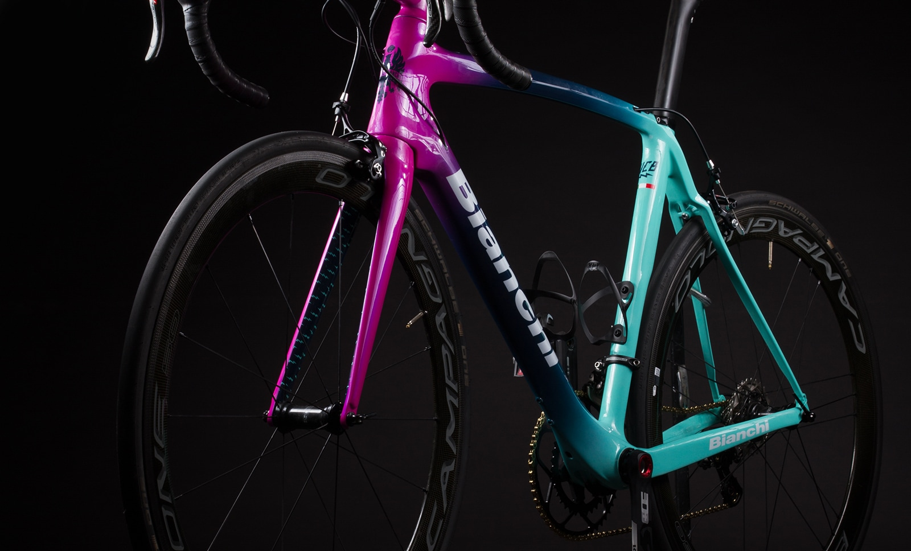

<div class="container mt-5">
  <div class="card">
    <div class="head">
      <h2>“It never gets easier, you just go faster”</h2>
    </div>
    <div class="row mt-4"style="margin: 20px;">
      <div class="col-md-6">

        
        
      </div>
      <div class="col-md-6">
        <h3>"Bianchi"</h3>
        <p>F.I.V. Edoardo Bianchi S.p.A., commonly known as Bianchi ([ˈbjaŋki]) is the world's oldest bicycle manufacturing company in existence, having pioneered the use of equal-sized wheels with pneumatic rubber tires.[1] The company was founded in Italy in 1885 and in addition to bicycles it produced motorcycles from 1897 to 1967. In 1955 the joint-venture Autobianchi was created together with Fiat and Pirelli for the manufacturing of cars – Autobianchi was subsequently sold to Fiat in 1969.


        <ngb-rating [(rate)]="currentRate"></ngb-rating>
        <hr>
        <pre>Rate: <b>{{currentRate}}</b> of 10</pre>
      </div>
    </div>
  </div>
</div>


